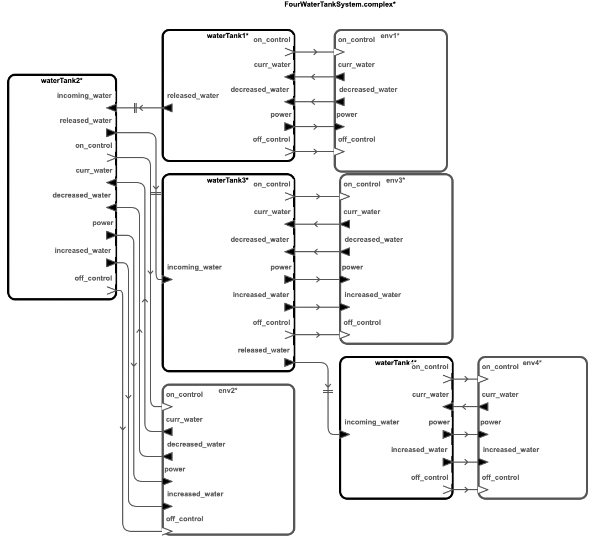
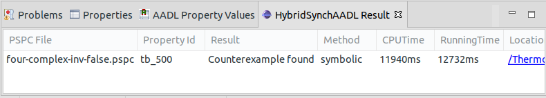

Networked Water Tank Systems
This benchmark model represents the a number of water tanks which are connected by pipes. The water level in each tank is separately controlled by the pump in the tank, which can be turend on or off.
Download
You can download the benchmark model: WaterTank.zip
Top-Level Components
We provide six cases of benchmark model: two, three and four water tanks with simple control logic or complex control logic.
Architecture

HybridSynchAADL Model: Controller and Environment
Controller.aadl
thread WaterTankThread
features
on_control: out event port;
off_control: out event port;
curr_water: in data port Base_Types::Float;
incoming_water: in data port Base_Types::Float;
increased_water: out data port Base_Types::Float;
released_water: out data port Base_Types::Float;
power: out data port Base_Types::Float;
decreased_water: in data port Base_Types::Float;
properties
Dispatch_Protocol => Periodic;
end WaterTankThread;
thread implementation WaterTankThread.simple
annex behavior_specification{**
states
init : initial complete state;
exec : state;
transitions
init -[ on dispatch ]-> exec {
increased_water := incoming_water;
released_water := decreased_water
};
exec -[ true ]-> init {
if (curr_water <= 33)
power := 0.5;
on_control!
elsif (curr_water <= 39)
power := 0.3;
on_control!
else {
power := 0.0;
off_control!
}
end if
};
**};
end WaterTankThread.simple;
thread implementation WaterTankThread.complex extends WaterTankThread.simple
annex behavior_specification{**
states
init : initial complete state;
exec : state;
transitions
init -[ on dispatch ]-> exec {
increased_water := incoming_water;
released_water := decreased_water
};
exec -[curr_water <= 42]-> init {
if (curr_water <= 30)
power := 0.5
elsif (curr_water <= 33)
power := 0.4
elsif (curr_water <= 36)
power := 0.3
elsif (curr_water <= 39)
power := 0.2
else {
power := 0.1
}
end if;
on_control!
};
exec -[otherwise]-> init {
off_control!
};
**};
end WaterTankThread.complex;
Environment.aadl
system Environment
features
curr_water : out data port Base_Types::Float {Data_Model::Initial_Value => ("0");};
increased_water : in data port Base_Types::Float;
power: in data port Base_Types::Float;
decreased_water : out data port Base_Types::Float {Data_Model::Initial_Value => ("0");};
on_control : in event port;
off_control : in event port;
properties
Hybrid_SynchAADL::isEnvironment => true;
end Environment;
system implementation Environment.impl
subcomponents
water: data Base_Types::Float;
decrease: data Base_Types::Float;
increase: data Base_Types::Float;
pump_power: data Base_Types::Float;
connections
C1: port water -> curr_water;
C2: port increased_water -> increase;
C3: port decrease -> decreased_water;
C4: port power -> pump_power;
modes
off: initial mode;
on: mode;
off -[on_control]-> on;
off -[off_control]-> off;
on -[on_control]-> on;
on -[off_control]-> off;
properties
Hybrid_SynchAADL::ContinuousDynamics =>
"decrease(t) = (50 * 0.001 * t) ; water(t) = water(0) + pump_power - (50 * 0.001 * t) + increase" in modes(on),
"decrease(t) = (50 * 0.001 * t) ; water(t) = water(0) - (50 * 0.001 * t) + increase" in modes(off);
end Environment.impl;
Safety Requirement
We analyze the safety invariant property where temperature of all water tank contains the amount of water more than 30 up to bound 500 ms.
four-complex-inv-false.pspc
proposition [initial]: abs(env1.water - 55.0) < 0.1 and
abs(env2.water - 38.5) < 0.1 and
abs(env3.water - 44.0) < 0.1 and
abs(env4.water - 40.0) < 0.1;
proposition [upperBound] : env1.water >= 30 and
env2.water >= 30 and
env3.water >= 30 and
env4.water >= 30;
invariant [tb_500] : ?initial ==> ?upperBound in time 500;
Analysis Results
